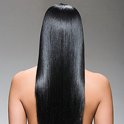

ႏူးညံ့ ေတာက္ ေျပာင ္ေသာ ဆံ ေကသာ ပိုင္ရွင္

၁။ ေရ ေအးျဖင့္ သာ ေခါင္း ေလွ်ာ္ ပါ။
၂။ မိမိဆံပင္ ႏွင့္ လိုက္ ဖက္ မည့္ (အဆီျပန္ ေသာဆံပင္၊ ေျခာက္ ေသြ႕ ေသာဆံပင္ စသည္ ျဖင့္ သီးသန္႔ ထုပ္ လုပ္ ထား ေသာ) ေခါင္း ေလွ်ာ္ ရည္ ကိုသာ သံုးပါ။
၃။ ဆံပင္ ေပ်ာ့ ေဆးသံုးပါ။
၄။ အလြန္ပူ ေသာ ေလ ေတြက သင့္ ဆံပင္ ကို ေျခာက္ ေသြ႕ကၽြတ္ ဆတ္ ေစျပီး ေတာက္ ပမႈကို ပ်က္ ျပယ္ ေစႏိုင္ သျဖင့္ ဆံပင္ အ ေျခာက္ ခံစက္ ကို မသံုးပါႏွင့္။
၅။ အရက္၊ ေဆးလိပ္ ႏွင့္ ေကာ္ ဖီက ဆံပင္ ကို ထိခိုက္ ပ်က္ ဆီး ေစႏိုင္ သျဖင့္ ေရွာင္ ၾကည္ ပါ။
၆။ ဟင္း သီးဟင္း ရြက္ ႏွင့္ သစ္ သီးမ်ား ပံုမွန္ စားပါ။
၇။ အသင့္ စားသ ေရစာ ေတြက သင့္ ဆံပင္ ကို မြဲ ေျခာက္ ေစႏိုင္ လုိ႔ တတ္ ႏိုင္ သ ေလာက္ေ ရွာင္ ၾကည္ ပါ။
၈။ ပန္း သီးႏွင့္ ျပဳလုပ္ ထား ေသာ ရွာလကာရည္ ၂ဇြန္း၊ ေရ၅ခြက္ ကို ေရာျပီး ေခါင္း ေလွ်ာ္ ျပီးတိုင္း လိမ္း ပါ။
၉။ ၾကက္ ဥကို ဆံပင္ ေပၚတြင္ လိမ္း ျပီး မိနစ္ ၃၀ခန္႔ ၾကာမွ ေရ ေဆး ေခါင္း ေလွ်ာ္ ပါ။
၁၀။ ငွက္ ေပ်ာသီးႏွင့္ ေထာပတ္ သီးတို႔ကို ေခါင္း ေလွ်ာ္ ျပီးစ ဆံပင္ ေပၚတြင္ လိမ္းပါ။ မိနစ္ ၃၀ခန္႔ ၾကာမွ ေရ ေဆးပါ။